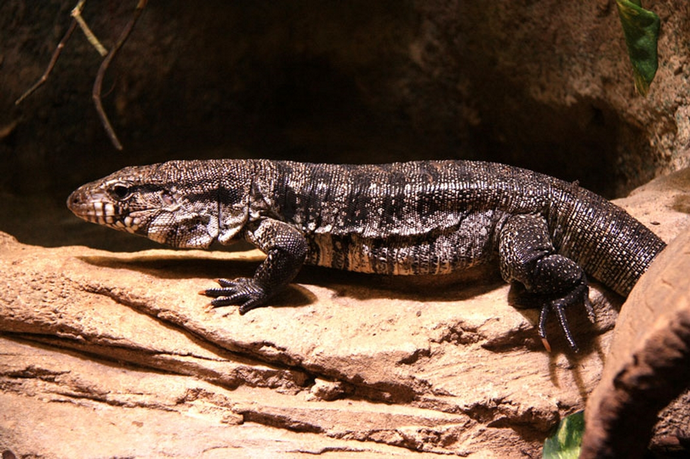
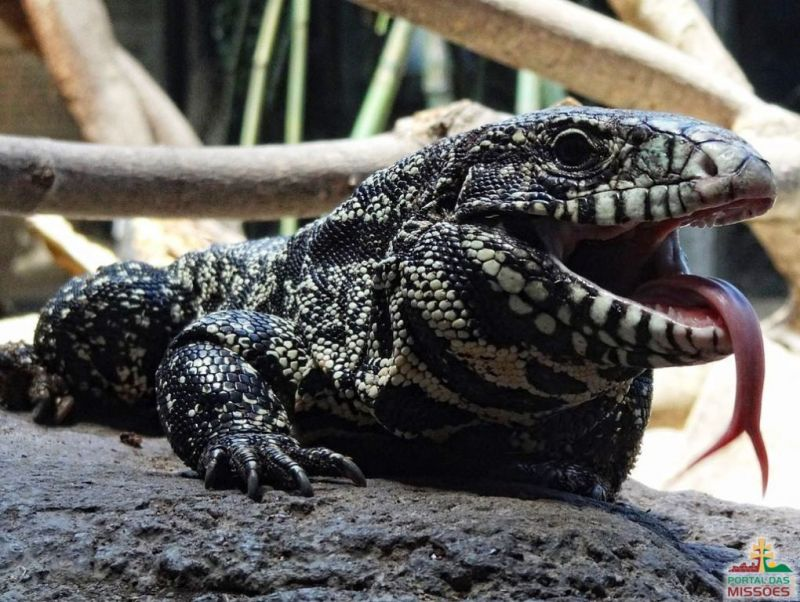
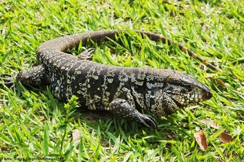
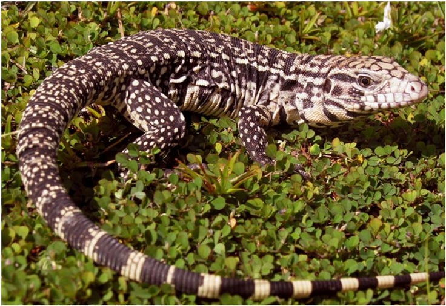
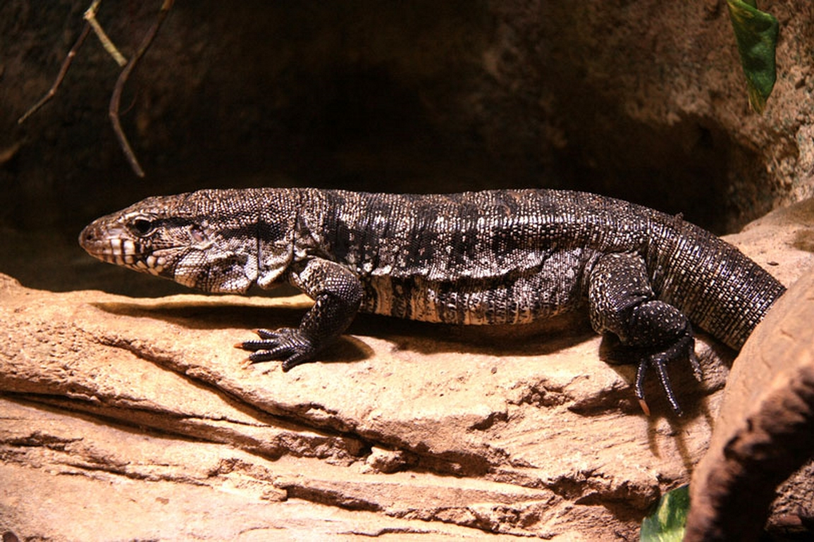
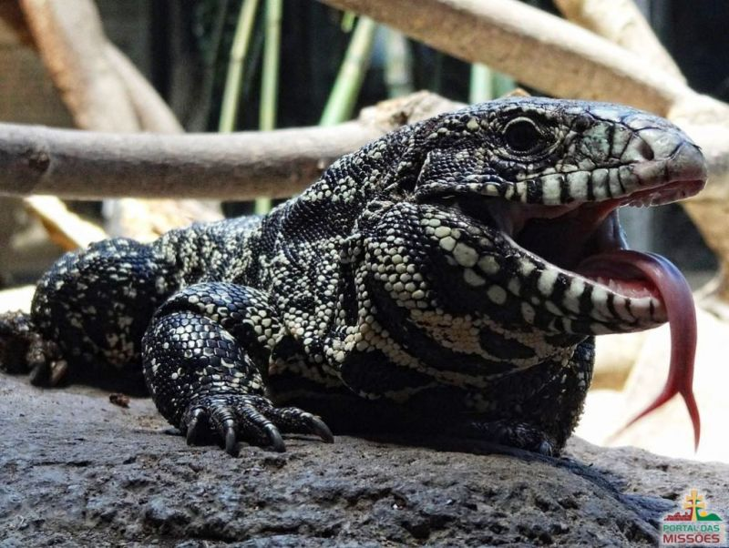
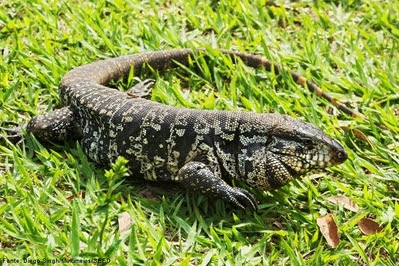
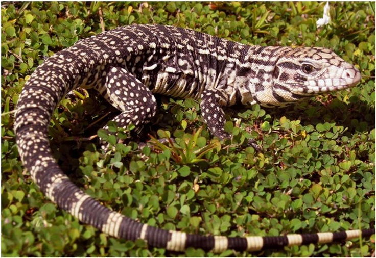

Nome Científico:Salvator merianae (Duméril, Bibron & Duméril, 1851)
Nomes Populares: Conhecido também como "teiú", "teiu-comum" ou "iguana-catingueira"
Classificação Biológica
Domínio: Eukaryota
Reino: Animalia
Filo: Chordata
Classe: Reptilia
Ordem: Squamata
Família: Teiidae
Gênero: Salvator
Espécie: S. merianae
Nutrição Geral e Hábitos Alimentares
Tipo de Nutrição: Onívora
O teiú comum tem uma dieta variada que inclui frutas, insetos, pequenos vertebrados e ovos. É um animal oportunista que adapta sua alimentação conforme a disponibilidade de alimentos.
Morfologia
Pele e Corpo O teiú comum possui uma pele com escamas que varia em cor de acordo com o ambiente, geralmente em tons de verde e marrom. Seu corpo é robusto e adaptado para escalar e se esconder em ambientes arbóreos e terrestres. Órgãos Respiratórios Seu sistema respiratório inclui narinas, faringe, laringe, traqueia e pulmões, adaptados para respirar ar atmosférico. Escamas Possui escamas lisas e duras que ajudam na proteção contra predadores e na locomoção.
Comportamento
O teiú comum é um animal ativo durante o dia e pode ser encontrado em uma variedade de habitats, desde florestas até áreas urbanas. É conhecido por sua habilidade de escalar árvores e sua natureza curiosa. A comunicação inclui vocalizações e sinais corporais.
Ocorrência
O teiú comum é nativo da América do Sul, com uma distribuição que inclui Brasil, Argentina, Paraguai e Uruguai. Prefere áreas de vegetação densa, como florestas e áreas com arbustos, mas também pode ser encontrado em áreas alteradas pelo homem.
Mapa de Ocorrência
Reprodução
Sistema de Acasalamento: O teiú comum é territorial durante a época de acasalamento, e as cópulas ocorrem na terra. Reprodução ao Longo do Ano: A reprodução geralmente ocorre na primavera e no verão. Postura de Ovos: A fêmea deposita ovos em um ninho feito em buracos ou em vegetação. Os ovos são incubados pela fêmea e os filhotes são cuidados até se tornarem independentes.
 






